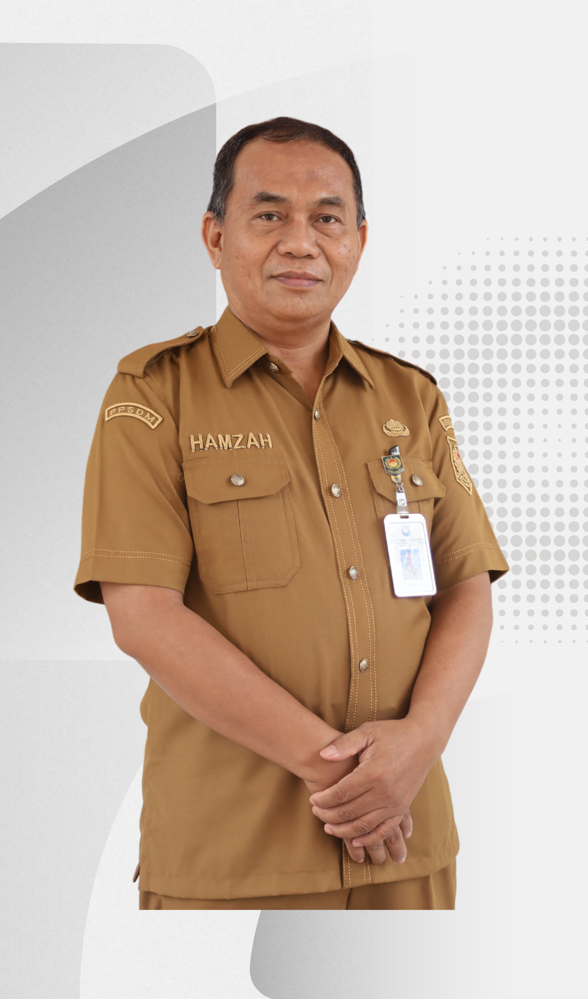

Fasilitas pembelajaran digital interaktif guna mendukung pengembangan kompetensi dan inovasi kepemimpinan Anda.
Pantau agenda harian dan timeline kegiatan pelatihan Anda.
Akses dan unduh modul, bahan tayang, serta referensi.
Rekam kehadiran harian Anda dengan cepat dan terintegrasi.
Kumpulkan penugasan individu dan kelompok dengan mudah.
Kenali widyaiswara dan hubungi panitia penyelenggara.
Kepala BBPK APDN-IV Makassar
Selamat datang di Portal Pelatihan Kepemimpinan Pengawas (PKP) Angkatan V Tahun 2026. Pelatihan ini merupakan program strategis untuk mengembangkan kompetensi kepemimpinan operasional bagi Pejabat Pengawas, guna menjamin akuntabilitas jabatan dalam mengendalikan pelaksanaan kegiatan pelayanan publik secara efektif, efisien, dan sesuai dengan standar operasional prosedur.
Melalui pelatihan ini, diharapkan seluruh peserta mampu membangun tim kerja yang tangguh dan mengoptimalkan inovasi pelayanan dengan senantiasa mengimplementasikan nilai-nilai dasar ASN yaitu BerAKHLAK (Berorientasi Pelayanan, Akuntabel, Kompeten, Harmonis, Loyal, Adaptif, dan Kolaboratif) dalam setiap pelaksanaan tugas. Mari bersama-sama kita wujudkan sosok pemimpin pengawas yang berintegritas, profesional, dan berdedikasi tinggi untuk mewujudkan pelayanan publik yang prima.

Asesor SDM Aparatur Ahli Madya
Analis Pengembangan Kompetensi Ahli Pertama